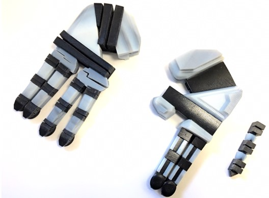
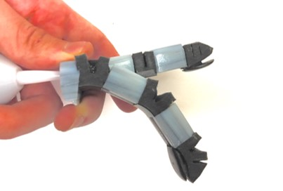

From left to right: iterations of gripper designs and
bending movement of finger caused by air pressure in
internal chambers
Overview:
During my first co-op as a systems test engineering co-op at iRobot,
I had access to industrial 3D printers such as Objet, Fortus,
MarkForged, and HP platforms and I had to take advantage of the
resources in the limited time. Being very interested in soft robotics,
and having produced actuators by silicone molding, I explored the
feasibility of printing an soft robotic actuator with an Objet printer
with variable stiffness material printing.
Purpose:
To experiment with the feasibility of manufacturing a soft robotic
component with a Objet 3D printer
Exercise practical CAD modeling skills
Go through general procedures when designing with industrial 3D printers
Challenges:
Printer tolerances required some iteration and testing for better understanding
Interface between solid and flexible material needed to be substantial in area for secure adhesion
Air pocket number, depth, and height had to be experimentally optimized
Elastic modulus of the flexible material had to be experimentally optimized
Outcome:
Small samples with different elastic moduli were printed to
verify their strength and flexibility
Finger modules were printed individually to verify the
tolerances of the printers and the effectiveness of the fingers
Contact surface area and configuration was altered to create
resistant and durable seals between the two materials and parts
Parts of the gripper were printed in a modular form for
individual testing, and the number of air pockets, their depth,
and height were verified and changed accordingly
(palm, fingers, etc.)
Skills Learned:
Developed skills to work with industrial 3D printers
(Objet variable stiffness printer): Printing assemblies,
tolerances, and durability expectation
Applied PneuNets (essential design concept in soft robotics)
in a gripper design